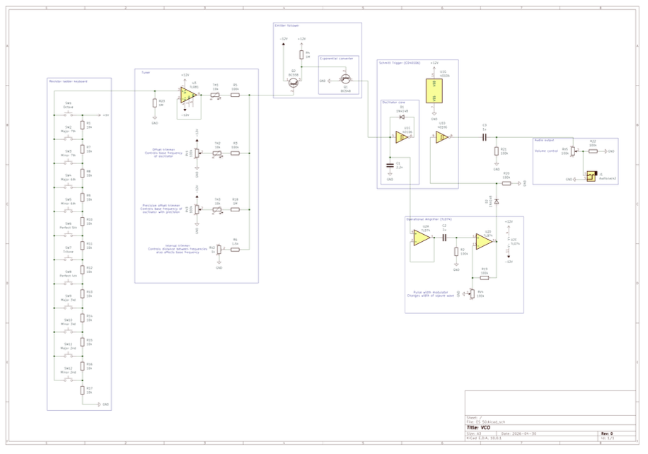
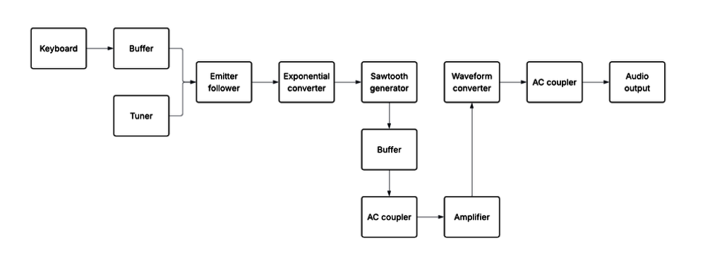

A fully analog 12-note piano, built with a teammate for Harvard ES50. The circuit turns key presses into a variable voltage, tunes and shapes that voltage into a musical waveform, and pushes it out as audio — no microcontroller involved.



Keyboard interface
Each of the 12 keys taps a node on a resistor ladder, so pressing a key outputs a distinct voltage down a shared bus depending on where it sits in the divider.
Tuning and oscillation
That voltage passes through an emitter follower and exponential converter, then into a tuning stage built from voltage adders and dividers that space the twelve tones to the equal-tempered scale. The oscillator core uses a 40106 hex Schmitt trigger inverter — wired with a diode, resistor, and capacitor — to generate a sawtooth wave at the tuned frequency.
Output stage
The sawtooth is buffered, AC-coupled, and amplified before a waveform converter shapes it into the final tone, which passes through a second AC coupler and volume control to the audio output.